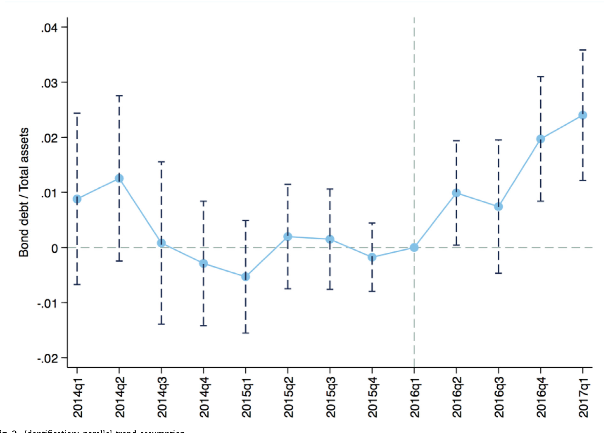
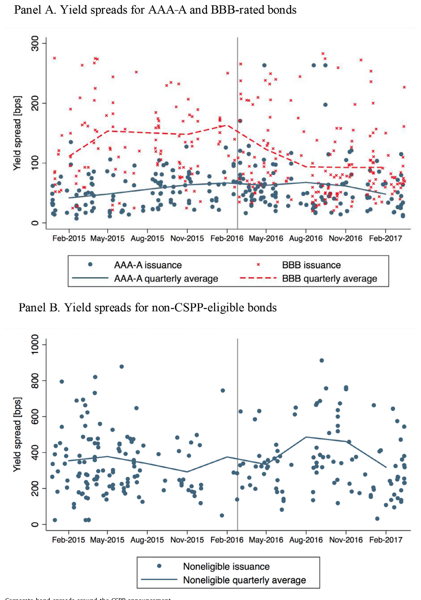
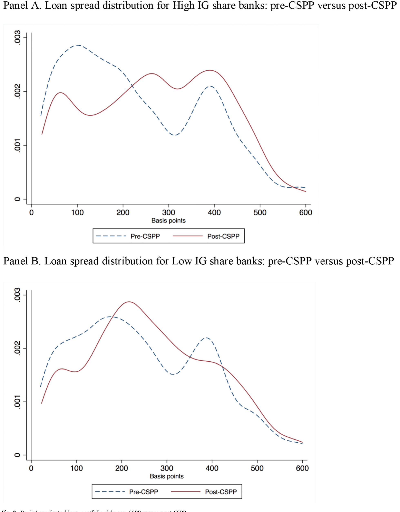
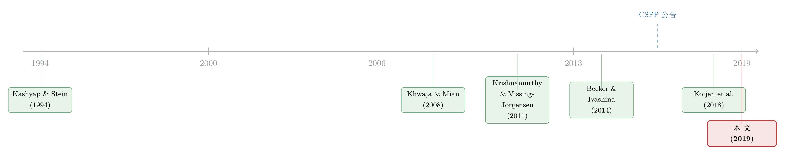

央行没买你的债，你却也跟着发了债——一条「资本结构」的货币政策暗线
本文读的是 Grosse-Rueschkamp, Steffen & Streitz (2019, Journal of Financial Economics)：欧洲央行（ECB）启动公司债购买计划（CSPP）后，合格公司的债券收益率下降约 40 个基点，于是它们用债券置换了银行贷款；银行因此「腾」出了放贷能力，把信贷转给了那些进不了债券市场的私人企业，后者的投资随之增长。作者把这条「先松开大企业、再溢出到小企业」的链条，命名为货币政策的 资本结构渠道（capital structure channel）。
1 一个被忽略的问题：央行买债，到底松动了谁？
先想一个看似简单、其实没人认真回答过的问题。
中央银行下场买公司债——比如欧洲央行 2016 年的公司部门购买计划（Corporate Sector Purchase Programme, CSPP）——我们当然知道它会压低被买债券的收益率。但接下来呢？一家债券被买的公司，拿着突然变便宜的债券融资，它会做什么？而那些债券压根没被买、甚至没资格被买的公司，又会因此遭遇什么？
传统的故事里，量化宽松（quantitative easing, QE）传导到实体经济，靠的是所谓 净值渠道（net worth channel）：央行买入银行资产负债表上的资产（按揭支持证券、国债），抬高资产价格，等于给银行「补了血」，银行有了更厚的净值，于是多放贷。这条渠道的关键前提是——央行买的东西，得在银行的账本上。
可 CSPP 偏偏不满足这个前提。论文一开始就给出了一组很要命的数字：欧元区货币金融机构（MFIs）持有的非金融企业（non-financial corporations, NFC）债券，只占其总资产的不到 0.5%。换句话说，欧元区的银行几乎不持有企业债。央行买走这些债，银行的净值纹丝不动。
于是净值渠道在这里几乎失效了。那 CSPP 到底是怎样、又是否真的传导进了实体经济？
这正是本文的「钩子」：当央行绕过银行的资产负债表、直接去买企业债时，旧的传导故事讲不通了。作者要找的，是一条全新的暗线。
2 资本结构渠道：把「企业的融资选择」放进货币政策
作者提出的机制，朴素得近乎优雅。我们一步步走。
首先，央行直接买公司债，压低了合格债券的收益率——债券融资变便宜了。
接着，一个自然的问题是：如果债券相对银行贷款变便宜了，企业会怎么做？答案是用脚投票——从银行贷款转向发行更长期的债券。大企业本就同时握有「发债」和「找银行借款」两个选项，价格一动，天平就倾斜。
然后，对银行而言，这意味着什么？意味着它最优质的那批大客户，开始提前还掉银行的定期贷款（term loans）、转去债券市场。银行的贷款需求下降了。
但真正关键的一步在于：贷款需求下降，反而松开了银行自身的监管与经济约束。原本被这些大额贷款占着的资本和额度，现在空了出来。
于是反转出现：被释放出来的放贷能力，没有消失，而是流向了另一批企业——那些进不了公开债券市场、只能依赖银行的私人企业（private firms）。这些企业拿到了原本拿不到的贷款，投资随之上升。
把这条链条连起来：央行买大企业的债 → 大企业弃贷转债 → 银行被动「减负」→ 银行转头去贷给小企业 → 实体投资增长。注意，主效应是间接的：货币政策没有直接刺激大企业投资（后文会看到这部分几乎为零），真正的实体效应发生在那些央行从未触碰过的小企业身上。作者把这条机制命名为货币政策的资本结构渠道——因为它的发动机，正是大企业债务资本结构（debt capital structure）的重新配置。
这与「央行印的不是钱、是占地方的准备金」那条把 QE 解读成挤出银行贷款的逻辑恰好镜像（参见《央行印的不是钱，是「占地方」的准备金》）：在那里准备金挤掉了贷款，在这里却是企业主动腾出了贷款空间。
3 识别策略：用「资格」做一次准自然实验
要把这条故事讲成因果，作者需要一个干净的处理组（treatment）和控制组（control）。CSPP 的制度细节恰好提供了这把刀。
CSPP 的合格门槛是离散的。 一只债券要被纳入购买范围，发行人必须是注册在欧元区的非金融企业，且债券需获得 S&P、Moody's、Fitch、DBRS 四家评级机构中至少一家的投资级（investment grade, IG）评级。这条「IG 与否」的界线，把企业一刀切成两半。
但这里有个麻烦：ECB 究竟买哪几只债，是它自己定的、可能内生；而且并非所有合格债都真被买了。如果直接比较「被买」和「没被买」的债券，估计就被央行的选择污染了。
作者的解法是 意向处理（intention-to-treat, ITT） 思路：不看「谁真被买了」，只看「公告之前谁有资格被买」。处理组 = 所有 CSPP 合格企业（注册在欧元区、有 IG 评级的公司）；控制组 = 不合格的欧元区公众公司（无评级或非投资级）。ITT 衡量的是「购买计划对合格企业这一整组的平均影响」，区别于「对真被买的那家公司的影响」（treatment-on-the-treated, TOT）。考虑到合格但未被买的债券也会因投资者组合再平衡而受益，ITT 反而是更稳健、也更偏保守（下界）的因果度量。
模型是一个标准的 双重差分（difference-in-differences, DiD）：
这里 Post 在 CSPP 公告后（2016 Q2 至 2017 Q1）取 1，Treated 对合格企业取 1。Y 是滞后一期的企业特征：规模（总资产对数）、盈利能力（EBITDA/总资产）、有形资产、市值账面比。作者用 Leverage 的不同口径——Bond debt/Assets、Term loans/Assets、Revolving credit/Assets、Bank debt/Bond debt——来分别看债务结构的各个侧面。
识别的软肋作者自己也承认：处理并非随机分配，而是落在一个可能内生的变量（IG 评级）上。比如，IG 企业在公告后或许本就有独立于购买计划的债券需求变化。为此他们做了平行趋势（parallel trends）检验。

Figure 2: Identification: parallel trend assumption
如图 2 所示，处理组与控制组在 CSPP 之前的债务结构走势基本平行，公告之后才骤然分叉——这正是 DiD 最想看到的图形。
4 第一记重锤：合格企业用债券「换掉」了银行贷款
先看价格层面的直接证据。

Figure 1: Corporate bond spreads around the CSPP announcement
如图 1，合格公司债的利差在 CSPP 公告之后应声而落：公告后四个季度相比之前四个季度，合格债的收益率利差下降约 40 个基点；而非合格债的利差几乎没有变化。更妙的是，这个效应在最靠近资格门槛的 BBB 级债券上尤其显著——它们离「掉出投资级」最近，央行的托底自然给它们最大的安全垫。
价格便宜了，企业果然换了融资方式。本文的第一个主结果是：
- 合格企业的 债券负债/资产 比相对非合格企业、相对 CSPP 之前上升了
2个百分点，相当于债券杠杆相对无条件均值增长了13%； - 同时，定期贷款/资产比下降了
1个百分点，相当于相对均值下降8%。
也就是说，债券主要是作为银行（定期）贷款的替代品进来的，而非单纯加杠杆。再往细里拆：BBB 级企业增加债券负债（+2.3 pp）多于 AAA-A 级（+1.4 pp），且 BBB 企业是拿债券去置换银行债（定期贷款 −1.6 pp），整体杠杆不变；AAA-A 企业则是净增了杠杆。论文里给了三个生动的实例：2016 年 10 月西班牙的 Amadeus 用一笔 5 亿欧元、票息仅 0.125%、期限更长的欧元债，置换掉了一笔 5 亿欧元贷款；同月 Publicis 部分偿还银行贷款；2017 年 2 月 Ryanair 用 7.5 亿欧元欧元债偿还了 4.47 亿欧元的长期借款——三家公司都是 BBB 级。
作者一口气堵了六个「另有隐情」的口子：(1) 合格 vs 非合格的债券融资事前趋势；(2) 经济整体回暖对高低风险企业的差异影响；(3) 银行贷款供给本身的下降；(4) 处理组与控制组的系统性差异；(5) 用发行评级而非发行人评级；(6) ECB 其他购债计划造成的主权债稀缺。结论一致：CSPP 公告确实对合格企业的债务资本结构产生了一阶效应。
5 第二记重锤：被「腾」出来的钱，流去了小企业
故事到这里只讲了一半。大企业弃贷转债，银行少了一批贷款需求——然后呢？
这是全文最漂亮的一跳。作者用 DealScan（Thomson Reuters LPC）的贷款数据，构造了一个衡量银行受 CSPP 影响程度的代理变量 IG share：
$$ IG\ share_j = \frac{\sum \$\ \text{Term loans to eurozone IG firms by bank } j}{\sum \$\ \text{Term loans to all European firms by bank } j} $$
它度量的是 CSPP 之前（2010–2014 年）银行 j 的定期贷款组合里，欧元区 IG 借款人占了多大比例。IG share 越高的银行，越会因为合格企业弃贷转债而「失血」、从而被迫腾挪。这里只用定期贷款而不用授信额度（credit lines），因为后者与债券不是好的替代品（Berg et al., 2017）。
真正关键的识别一步：作者构造了一个 bank-firm 配对的面板，利用「有些企业同时与不止一家银行有关系」这一事实，加入企业固定效应，用 Khwaja and Mian (2008) 的同企业内估计，把贷款需求从贷款供给里干净地剥离出来——同一家企业、不同银行、谁的 IG share 高谁就更可能在 CSPP 后给它放贷，需求被固定效应吸收掉了。
第二个主结果：私人企业（不太可能直接受 CSPP 影响的公司）从高 IG share 银行获得贷款的概率，在 CSPP 后高出 8.8 个百分点。相对于 20% 的无条件获贷概率，这是 44% 的相对增幅。而公众公司（通常有别的外部融资渠道）则没有这种增量——这与 Holmstrom and Tirole (1997) 的论断一致：中介资本上升，增加的是对融资约束型企业的贷款供给。
更进一步，这个效应由谁驱动？是那些 一级资本充足率（tier-1 ratio）低、不良贷款（nonperforming loans, NPLs）高 的弱银行。正是这些原本被约束捆住手脚的银行，在松绑后最积极地把钱放了出去。
6 这是「好心」还是「埋雷」？——风险与实体效应
新放出去的贷款，会不会是又一轮「僵尸贷款」？这是欧洲主权债危机里被 Acharya et al. (2017) 狠狠批评过的事。作者的回答是否定的：拿到钱的企业，盈利能力和利息保障倍数都高于中位数——它们是好企业，不是僵尸。而且银行也通过更高的贷款利差为更高的借款人风险拿到了补偿。
但天下没有免费的午餐。信贷从高信用的公众企业，转向更小的私人借款人，必然抬高银行的贷款组合风险：对 CSPP 合格企业敞口大的银行，其新发放贷款的平均利差，相对 CSPP 前上升了约三分之一。

Figure 3: Banks’ syndicated loan portfolio risk: pre-CSPP versus post-CSPP
如图 3，对比 CSPP 前后银行的银团贷款组合风险，可以看到风险敞口的整体抬升。
最后是实体效应这块拼图：从「合格借款人很多」的银行借钱的企业，投资增加了 3.8 个百分点。考虑到 CSPP 之前的平均资本开支（CapEx）只有 5.9%，这个量级相当可观。而对合格企业自己的投资，作者却没有找到显著效应——这说明这些大企业本就不受融资约束，宽松货币政策对它们的投资影响有限。真正的实体红利，发生在间接受益的小企业身上。 这也正是「资本结构渠道」一名的全部分量所在。
作者诚实地给出了硬币的另一面：这条渠道短期看是好事（缓解小企业约束、拉动投资），但长期看，它让银行系统性地增加了对经济中更高风险板块的敞口，可能挑战金融稳定。一个刺激增长的渠道，同时也是一个累积风险的渠道。
7 数据
- 企业层面：S&P Capital IQ 中所有公开上市的企业，用于 DiD 的资本结构分析；观测单位为「企业 × 季度」；样本期 2015 Q1 至 2017 Q1，post-CSPP 从 2016 Q2 开始；为剔除处理/控制组系统差异，作者删去了 CSPP 公告前四个季度内没有任何公开债券在外的控制组企业（它们可能根本没有债市准入）。
- 贷款层面：DealScan（Thomson Reuters LPC），用于构造
IG share（2010–2014 区间估计）以及 pre/post-CSPP 的 bank-firm 配对面板；每个 bank-firm 对在折叠后有两个观测（前、后各一），剔除前后期贷款额均为零的配对，且只在银行担任牵头安排行（lead arranger）时计入。 - 制度时点：CSPP 于 2016 年 3 月 10 日公告，4 月 21 日公布细则，6 月 8 日开始实施；至 2017 年 12 月，ECB 购入合格公司债逾
€130亿（注：原文为 billion，€130 billion），其中约85%是已在二级市场交易过的债券。
8 文献脉络
把这篇论文放进它的家谱里，会看到几条线在 2016 年的欧元区交汇。
第一条线是银行贷款渠道（bank lending channel）。 Kashyap and Stein（1994, 1995, 2000）奠基性地论证了不同资产负债表的银行对货币政策反应各异；Peek and Rosengren (2015)、Campello (2002)、Gambacorta and Mistrulli (2004) 等沿此推进。本文的贡献是：货币政策只是间接地作用于贷款渠道——它先改变了低风险大企业的资本结构，银行的反应是被动的。
第二条线是 QE 对资产价格与实体的影响。 Krishnamurthy and Vissing-Jorgensen（2011, 2013）梳理了 QE 压低利率的各条渠道；Koijen et al. (2018) 记录了 LSAP 后主权债收益率的下降（关于这一点，可参见《央行买债，债究竟从谁手里流走了？》）。但这些研究几乎都没碰公司债的购买，更没讨论它对企业融资与投资政策的反作用——这正是本文切入的空白。

第三条线是贷款与债券的替代。 Becker and Ivashina (2014) 用企业在银行贷款与债券间的替代来度量贷款供给周期；本文反过来用央行购债引发的替代，去识别贷款供给的变化。而 Khwaja and Mian (2008) 的同企业内估计，则是把需求与供给剥离开的方法论支柱。最后，新近专门研究 CSPP 的 Abidi and Ixart (2018)、Arce et al. (2017) 聚焦西班牙企业的收益率与发行量；本文则把视野铺到整个欧元区，并一路追到了实体投资这一端。
9 评论与延伸（Q&A + 研究方向）
(a) 几个可能的疑问
Q：「资本结构渠道」和教科书里的「银行贷款渠道」「净值渠道」到底差在哪？
差在「谁先动」。净值渠道里，央行买的资产在银行账上，先动的是银行净值。资本结构渠道里，央行买的债不在银行账上（欧元区银行持有的 NFC 债不到总资产 0.5%），先动的是企业的融资选择——大企业弃贷转债，银行才被动腾挪。货币政策在这里是通过「改变企业的相对融资成本」起作用的。
Q：为什么用 ITT（看资格）而不直接看「哪些债真被买了」？
因为 ECB 买哪几只债是它自己定的，可能内生；而且合格债里有很大一部分并没真被买，但也会因投资者组合再平衡而受益。直接比「买 vs 没买」会被央行选择污染。基于公告前资格的 ITT 给出的是对「合格企业整组」的平均效应，作者论证它是真实效应的下界，更保守也更可信。
Q：处理组建立在 IG 评级这个内生变量上，DiD 还干净吗？
这是作者自己最担心的地方。他们的辩护有三层：平行趋势图（图 2）显示事前走势平行；大量控制变量与固定效应（企业、行业×季度、国家×季度）；并用 Oster (2017) 类的系数稳定性方法估计遗漏变量的影响。但「IG 企业在公告后本就有独立的债券需求变化」这一可能，无法被完全排除——所以这是「准自然实验」，不是真随机。
Q：放给小企业的钱，会不会其实是新一轮僵尸贷款？
作者明确否认。拿到钱的企业盈利能力和利息保障倍数都在中位数以上，是健康企业；而且银行通过更高的贷款利差为更高风险拿到了补偿。这与欧债危机期间 Acharya et al. (2017) 记录的「给僵尸企业续命」形成对比——那是不计回报的勉强放贷，这里是有补偿的风险承担。
Q：那为什么说这条「好」渠道同时是个隐患？
因为信贷整体上从高信用公众企业，转向了更小、更高风险的私人借款人。对合格企业敞口大的银行，新贷款平均利差上升了约三分之一——风险敞口实打实地抬高了。短期它缓解了小企业约束、拉动了投资；长期它让银行系统更深地嵌进了经济中较脆弱的板块。是好是坏，取决于你看的时间尺度。
Q：既然大企业拿到便宜钱，为什么它们的投资没增加？
因为它们本就不受融资约束。对一家能随时进债市的大公司，融资成本降一点，并不会解锁新的投资项目——它缺的从来不是钱。这恰恰反衬出实体效应的真正来源：那些被银行二次输血的小企业，它们才是受约束的一方。
(b) 几个可能的研究问题与提案
1. 资本结构渠道在「加息周期」里会不会反向运转？
【经济故事】CSPP 是宽松。当央行退出购债、甚至缩表加息时，合格企业的债券融资变贵，会不会反过来涌回银行、挤占小企业的信贷？这条渠道是否对称，关乎退出政策的分配后果。 【可行性】中。ECB 已于 2022 年起加息缩表，DealScan + Capital IQ 数据可延展，识别框架几乎可平移；难点在于加息期同时有宏观衰退冲击，需更强的银行敞口异质性来分离。
2. 把视角换到「外资债券持有人」：谁接走了合格债？
【经济故事】合格债收益率下降、被疯抢，原持有人（尤其是跨境投资者）被「挤」出后去了哪里？他们的组合再平衡是否把价格压力溢出到了非合格债、新兴市场债？这关系到 CSPP 的国际溢出。 【可行性】中。需要 ECB 证券持有统计（SHS）或 Koijen et al. 类的需求体系数据按持有人部门分解；识别可借用本文的资格门槛，难在跨境持仓数据的颗粒度。
3. 公司债二级市场流动性，是这条渠道的「润滑剂」还是「瓶颈」？
【经济故事】企业要顺利弃贷转债，前提是债券能以低成本发出、二级市场买得动。若某些行业/评级段的债券流动性差，资本结构渠道是否就被掐住？流动性可能是这条渠道强弱的横截面调节变量。 【可行性】高。TRACE 式或欧洲 ANNA-DSB / MiFID II 交易数据可构造债券流动性指标，与发行量、利差交互；与本文的 DiD 框架天然兼容。
4. 把「资格门槛」当断点：BBB 与 BB 交界处的断点回归。
【经济故事】本文用的是离散的 IG/非 IG 切分，但门槛附近（BBB− vs BB+）的企业最具可比性。若能在评级数值上做断点回归（RDD），能给出比 DiD 更干净的局部因果。 【可行性】中。需要可比的连续评级映射与足够多的门槛附近样本；难点是评级是离散粗粒度的，且评级机构间不一致（本文用「四家任一」），构造跑分变量需谨慎。
5. 银行的风险承担，事后真的「兑现」成了更高违约吗？
【经济故事】本文止步于「贷款利差上升、风险敞口抬高」，但没追到违约结局。这些被二次输血的小企业，在后续衰退（如 2020 疫情）里违约率是否更高？这是检验「好渠道 vs 埋雷」之争的终极证据。 【可行性】高。把本文的 bank-firm 面板向后延展到 2020–2022，观测违约/破产结局即可；识别可继续用
IG share银行敞口，需控制疫情冲击的行业异质性。
10 我的判断
这篇论文最漂亮的地方，是它把一个看似失效的渠道（净值渠道在 CSPP 下不成立）变成了发现新渠道的契机。当央行第一次绕过银行账本、直接买企业债时，旧故事讲不通，反而逼出了「企业资本结构 → 银行被动腾挪 → 小企业获贷」这条更精巧的链条。两段式的识别——前半段用资格门槛的 DiD，后半段用 Khwaja-Mian 的同企业内估计——各自干净，串起来又自洽，是实证公司金融里很见功力的设计。
贡献在于：它第一个把货币政策的传导，从「银行资产负债表」推回到「企业的融资选择」，并且一路追到了实体投资和金融稳定的双重含义。这比单纯记录「CSPP 压低了收益率」要深一层。
对识别的担忧也很清楚：处理组建立在 IG 评级这个内生变量上，平行趋势和 Oster 边界能缓解但不能根除「IG 企业本就有独立需求变化」的疑虑；ITT 是聪明的退路，但代价是我们只能谈「下界」而非点估计。此外，IG share 用 2010–2014 的历史组合衡量银行敞口，隐含「银行客户结构稳定」的假设，在快速变化的信贷市场里未必牢靠。
后续我最想看到的，是把这条链条追到「结局」：被二次输血的小企业，在 2020 年的冲击里到底活得怎样？如果它们违约率并不更高，那「资本结构渠道」就是一条几乎免费的政策红利；如果更高，那作者警示的「金融稳定隐患」就从理论担忧变成了实证账单。这个问题，今天的数据已经足够回答了。
参考文献
- Acharya, V., Eisert, T., Eufinger, C., Hirsch, C. (2017). Whatever It Takes: The Real Effects of Unconventional Monetary Policy. NYU Working Paper.
- Becker, B., Ivashina, V. (2014). Cyclicality of credit supply: firm level evidence. Journal of Monetary Economics 62, 76–93.
- Berg, T., Saunders, A., Steffen, S., Streitz, D. (2017). Mind the gap: the difference between U.S. and European loan rates. Review of Financial Studies 30, 948–987.
- Grosse-Rueschkamp, B., Steffen, S., Streitz, D. (2019). A capital structure channel of monetary policy. Journal of Financial Economics 133(2), 357–378.
- Holmstrom, B., Tirole, J. (1997). Financial intermediation, loanable funds, and the real sector. Quarterly Journal of Economics 112, 664–691.
- Kashyap, A., Stein, J. (1994). Monetary policy and bank lending. In: Mankiw, N. (Ed.), Monetary Policy. University of Chicago Press, 221–256.
- Kashyap, A., Stein, J. (2000). What do a million observations on banks say about the transmission of monetary policy? American Economic Review 90, 407–428.
- Khwaja, A., Mian, A. (2008). Tracing the impact of bank liquidity shocks: evidence from an emerging market. American Economic Review 98, 1413–1442.
- Koijen, R., Koulischer, F., Nguyen, B., Yogo, M. (2018). Quantitative Easing in the Euro Area: The Dynamics of Risk Exposures and the Impact on Asset Prices. University of Chicago Working Paper.
- Krishnamurthy, A., Vissing-Jorgensen, A. (2011). The effects of quantitative easing on interest rates: channels and implications for policy. Brookings Papers on Economic Activity 43, 215–265.
- Oster, E. (2017). Unobservable selection and coefficient stability: theory and evidence. Journal of Business & Economic Statistics.
- Peek, J., Rosengren, E. (2015). The role of banks in the transmission of monetary policy. In: The Oxford Handbook of Banking. Oxford University Press, 453–473.
- Stein, J. (1997). Internal capital markets and the competition for corporate resources. Journal of Finance 52, 111–133.